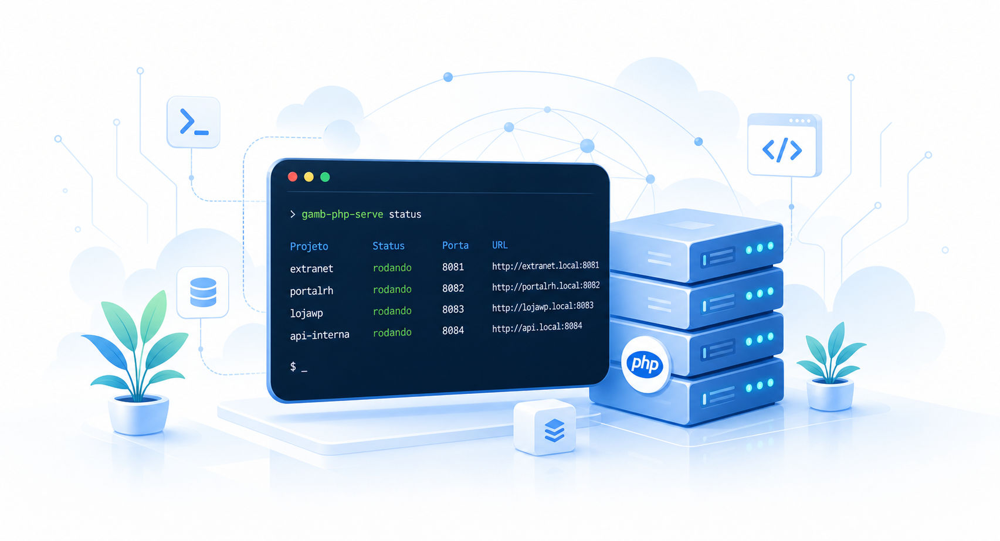

Registrar
Adicione seus projetos uma vez e deixe o catalogo local cuidar da organizacao visual.
Gerencie projetos PHP locais com painel claro, rapido e um modulo opcional de MySQL/MariaDB.
Painel visual para abrir, acompanhar e executar seus projetos.
Os quatro mais recentes aparecem em destaque. Os demais seguem ao lado em lista rolavel.
Botoes pensados para CMD, PowerShell e Bash, cobrindo projeto e banco local. A ponte do VS Code fica preparada para a extensao complementar.
Uma ferramenta Bash enxuta para registrar, subir, parar, listar e acompanhar seus projetos PHP locais sem acoplar nada ao repositrio. A ideia aqui e simplificar o fluxo diario com uma camada moderna, clara e pronta para evoluir, agora com uma camada opcional de banco para MySQL/MariaDB local.

Adicione seus projetos uma vez e deixe o catalogo local cuidar da organizacao visual.
Inicie, pare, verifique e acompanhe tudo com comandos claros, navegador aberto, painel central e banco local opcional.
Abra URLs locais com base path preservado e rode seu fluxo rapido direto do localhost.
gamb-php-serve
gamb-php-stop
gamb-php-list
gamb-php-status --all
gamb-php-db-start
gamb-php-db-status
gamb-php-remove
Suporte completo a CMD, PowerShell e Bash pela camada de comandos preparada no painel.
Autoria propria, alinhada com IA como parceira de design e qualidade. O foco e seguir buscando solucoes modernas para melhorar o dia a dia, reduzir atrito e deixar o trabalho local mais claro, rapido e confiavel.
Componente dinamico preparado para puxar links, repositrios e downloads do repositrio gamb-portfolio-solucoes.